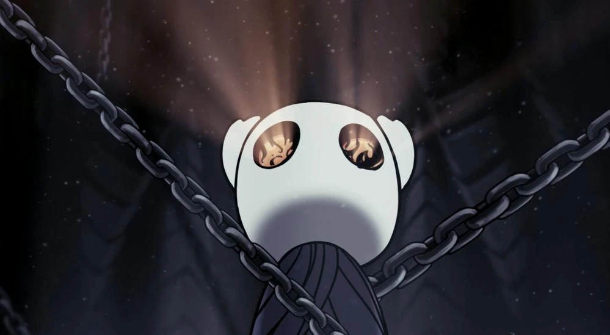
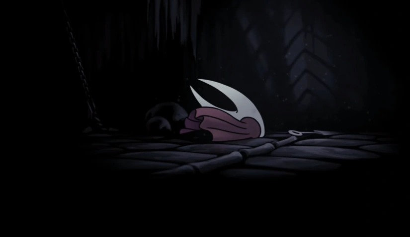
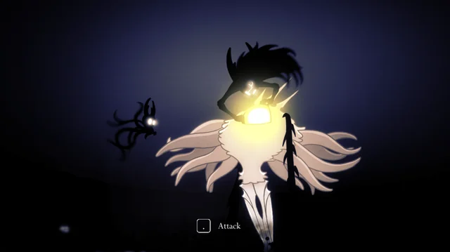

Arrival
The knight returns to Hallownest, after wandering the dunes beyond for some time, and arrives in the town of dirtmouth. It is mostly empty, and after a brief respite, the knight enter the old well and begins its journey inside Hallownest. Wandering the forgotten crossroads, the knight meets the last remaining Stag Beetle, and with it's help, it opens the Stagways. After exploring the forgotten crossroads, the knight comes upon the region of Greenpath. While making its way throught the foliage, Hornet appears, and lures the knight deeper into Greenpath. The red cloaked bug then challenges the knight to a duel, in which she states that she knows what the knight intends to do, and says it is too weak. Once she is defeated, a projection of the Dreamers speaks to the knight, and warns it not to wake them from their slumber. After this, and with some more exploring throught Fog Canyon and the Fungal Wastes, the knight reaches the city of tears and once again meets Hornet next to the memorial to the Hollow Knight. She tells the knight that its time wandering beyond the kingdom has given it "a resillience born of two voids". She tells the knight that it must seek the Grave in Ash, and the mark it would offer the knight.
Some time later, the knight would come upon the Resting Grounds and a memorial to the Dreamers. At that moment, the dremers pulled the knight into the dream realm in an attempt to stop it from breaking the seals they made. However, Seer, the last of the moth tribe, found the knight and guided it back into its body. She then gifted the knight with the drem nail, which granted it power over dreams. This was meant to be way for her to atone for the sins of the moth tribe and how they angered the Radiance. With this nail, the knight would be able to wake the dreamers from their eternal slumber. It explored more and more of Hallownest and acomplished much, such as challenging the mantis lords and earning their respect and favor, slayed a monster known as Nosk that had lured many bugs to their deaths within Deepnest, and rescued many bugs that had fallen on hard times while exploring the kingdom. Later, the knight came upon the Dreamer Herrah within deepnest. It destroyed her in the dream realm and so the first seal was broken. This action caused the seals on the Hollow Knight to crack, and the infection seeped out into the Forgotten Crossroads and made it far more dangerous to traverse. After this, the knight would seek out the Grave that hornet mentioned, which was actually the husk of the dead Wyrm. There, she challenged the knight one last time in order to ensure it could do what was required to stand against the infection. Upon it's success, it acquired the kings brand within, which gave it access to all of Hallownest.
After this, the knight returned to the City of Tears and defeated the master of the Soul Sanctum and mastered its control over Soul. With this, it climbed the Watcher's Spire and defeated the guards that protected Lurien. They proved no match for the knight, and another dreamer was destroyed. Once this was done, the knight journeyed deeper, and found it's way back into The Abyss where it had been abandoned by it's creator. It gained control over the void there, and used it to more easily travers The Abyss. With this done, the knight circled back to Fog Canyon and found the resting place of Monomon. This dreamer was guarded by a monster known as Umu, which had fallen to the infection. During battle, the knight was aided by Quirrel, a bug who had journeyed to hallownest in order to restore his lost memories. That pull had lead him here to Monomon's archives, where he remembered his purpose. he aided the knight in slaying Umu, ad helped unlock Monomon's resting place. The knight then destroyed the final dreamer. This lead the knight to choose how he would approach the final battle...
Endings
The Hollow Knight
The knight entered the temple that held the Hollow Knight and faced it in mighty combat. The Hollow Knight was in immense pain and torment after carrying the burden of the Infection for so long, and it did it's best to fight back against the Radiance's control. The knight defeated it and absorbed all of the Infection that was being unleashed, and took the Hollow Knight's place in the temple. It was sealed, and it's sacrifice would ensure that Hollownest would be a kingdom eternal.
Sealed Siblings
After meeting the White Lady, and seeking out the corpse of the Pale King in his White Palace, the knight acquired the two halves of the Kingsoul charm. It then took this charm down into the Abyss where the charm and the knight itself would merge with the Void at the spot it had died, and been born anew. Here, the knight regained it's memories of how it was cast down into the abyss and left to rot, and the kingsoul was transformed into the Voidheart. This allowed the bearer to unify the void under it's will. The knight then travelled to the temple that housed the Hollow Knight, where Hornet was waiting. She told the knight that she would be unable to enter the temple as it was hostile for non vessels, but she would bring aid when the time was right. Once the knight duelled and weakened the Hollow Knight, she latched onto the Hollow Knight and restrained it so the knight could deal the final blow. However, she was knocked off and the battle continued. Once the fight was won, the knight was sealed away, but with Hornet trapped inside with him, becoming the new Dreamer that sealed away the vessel within.
Dream No More
With the knight locked in combat with the Hollow Knight, he managed to weaken the vessel, which gave Hornet the chacne to restrain it. Seizing the chance, the knight struck with the Dream Nail, and entered the Holllow Knight's dream. this action brought the knight face to face with the Radiance, the very source of the infection that brought Hallownest to ruin. The knight then battled the dream god, and somehow managed to best it. As the final blow was struck, the knight summoned the void and cast off its own shell.The knight and the pure void form of the Hollow Knight then struck down and destroyed the Radiance, once and for all. The cycle of dreams was broken, the Infection would never again plague Hallownest. Hornet awoke and found the empty shell of her sibling, and knew that it did what it came to do.